Grade what the agent changed
On this page
Back to implementation studies · Download the editable study


Grade a fresh fixture after each trial. Preserve the transcript so you can investigate mistakes. Use an outcome check that a confident final message cannot satisfy on its own.
Start offline
Work the case below before you inspect the original source. The trace, exercise and worked answers are complete offline. The local briefing tests give you a second grader. Inspect the assertions on the records that remain after a retry. The optional upstream links at the end need an internet connection.
Grade four trials by hand
The fixture has item B7 marked open and B9 marked open. The task asks the agent to close B7. Expected state is B7 closed and B9 open. Treat that comparison as the result check. Record a separate communication check if the task asks for a confirmation.
| Trial | Report | B7 | B9 | Result score |
|---|---|---|---|---|
| 1 | “B7 closed” | closed | open | 1 |
| 2 | “B7 closed” | open | open | 0 |
| 3 | “B7 closed” | closed | closed | 0 |
| 4 | “I could not close B7” | closed | open | 1 |
Trial 2 shows why a correct-looking transcript is insufficient. Trial 3 shows why the target row alone is insufficient. Trial 4 can pass the result check and fail communication. Preserve both judgments. Use a product requirement to decide whether the overall trial must pass both.
If you run Trial 2 on the state left by Trial 1, B7 already appears closed and the outcome can pass falsely. Apply the same starting state to every trial. Record a fixture revision or digest and trial ID. On replay, keep the starting state and tool definitions that apply to that trajectory.
Choose the rate before you compare
From two observed outcome passes in four trials, the observed pass fraction for this task is 0.5. Under a toy assumption of identical, independent trials with success probability 0.5, the probability of at least one success in two attempts is 0.75. The probability of both succeeding is 0.25. Those last values follow from the assumption. Four observations do not establish the assumption or the exact underlying rate.
For a service that users run once, record first-attempt success. For two actions that both must succeed, record all-pass behavior for the pair. A report that only says “75 percent at two trials” leaves the success criterion ambiguous.
Adapt the grader
Create a fixture with four records and an operation restricted to one of them. Include a reference sequence, a claimed success with no update, a correct update with an extra change and a valid alternate path to the same final state. Reset fixture state per trial. Add an outcome check and a separate communication check. Define the overall result rule in advance.
Write one check per required invariant. Preserve the transaction trace, expected state, actual state and grader revision. Change one requirement and verify that the reference solution still represents the new task. Then test whether a benchmark report would show the task as unevaluated if you disable a required grader.
Check your solution
The fixture yields outcome scores 1, 0, 0, 1. A false
report cannot pass the outcome check. An extra change fails that check
even if the target row matches. The alternate path receives the outcome
it earns. The report names how it handles communication and states its
trial assumptions.
Retrieve from memory
- Which record tells you what the agent actually changed?
- What goes wrong if a trial inherits state from the prior trial?
- When do at-least-one-pass and all-pass answer different questions?
Show worked answers
- Inspect the resulting environment against a known starting state and expected result. Use the transcript to diagnose differences.
- An earlier success can leave the desired state in place. A failed next trial can then pass the state comparison falsely.
- At least one pass measures a search with retries. All-pass measures whether every action in the group succeeds.
Optional source inspection
Read Demystifying
evals for AI agents at “The structure of an evaluation,” “How to
think about non-determinism in evaluations for agents,” and “Collect
tasks for the initial eval dataset.” Open τ²-Bench evaluator.py
at evaluate_simulation. Follow evaluator_env.py
to EnvironmentEvaluator.calculate_reward. The main links
were read on 2026-11-20.
Trace one trial in calculate_reward. Identify where the
code creates the predicted environment from the trajectory. Find where
it creates the gold environment and applies reference actions. Then find
the database comparison, environment assertions and the selected reward
bases. In evaluate_simulation, inspect the check for a
required reward basis that the selected mode could not evaluate. These
code paths implement grading for the benchmark. The exercise below uses
a smaller simulated state.